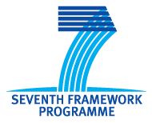

Translations
Translations
Second WAI-ACT Open Meeting
20 September 2013, Vilamoura, Portugal
Held in conjunction with AAATE 2013
Page Contents
Invitation
Learn about these latest resources on web accessibility:
- Web Accessibility Tutorials
- Website Accessibility Conformance Evaluation Methodology (WCAG-EM) 1.0
- Guidance on the development of web accessibility evaluation tools (working title)
W3C Web Accessibility Initiative (WAI) invited you to participate in this WAI-ACT Open Meeting to learn more about these and other resources, provide input into on-going resource developments, and explore opportunities for collaboration.
Visit the WAI-ACT Project page to learn more about the project and its deliverables.
Agenda
The meeting was held in Room Taurus of the Tivoli Marina Hotel:
- 09:00 - 09:15 About the WAI-ACT Project
- 09:15 - 09:45 Web Accessibility Tutorials
- 09:45 - 10:15 Website Accessibility Conformance Evaluation Methodology (WCAG-EM) 1.0
- 10:15 - 10:45 Other project resources
- 10:45 - 11:15 Coffee Break
- 11:15 - 12:00 Open discussion and future directions
- 12:00 - 12:45 Exploring collaboration opportunities
Presentation slides available
Venue
This meeting was co-located with the 12th European AAATE Conference — AAATE 2013:
Tivoli Marina HotelMarina Vilamoura
8125-901 Vilamoura, Portugal
Tel: + 351 289 303 303
Fax: + 351 289 303 345
GPS: Latitude 37° 4'27.92"N Longitude 8° 7'12.95"W
Find more information about the conference venue and on reaching the venue on the AAATE 2013 website.
Registration
This meeting was free of charge, also for non-participants of the AAATE conference. Registration for this meeting was not required but spaces were limited. Participation at this meeting did not entitle participation at the AAATE conference without further registration.
Contacts
This meeting was organized by the WAI-ACT Project. Contact Shadi Abou-Zahra (Scientific Coordinator) with questions.